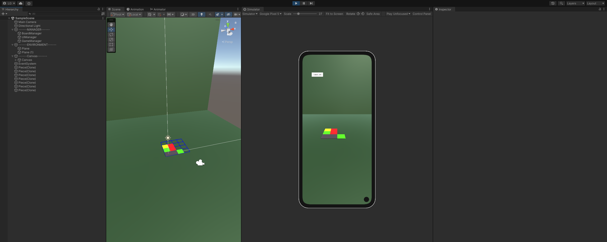
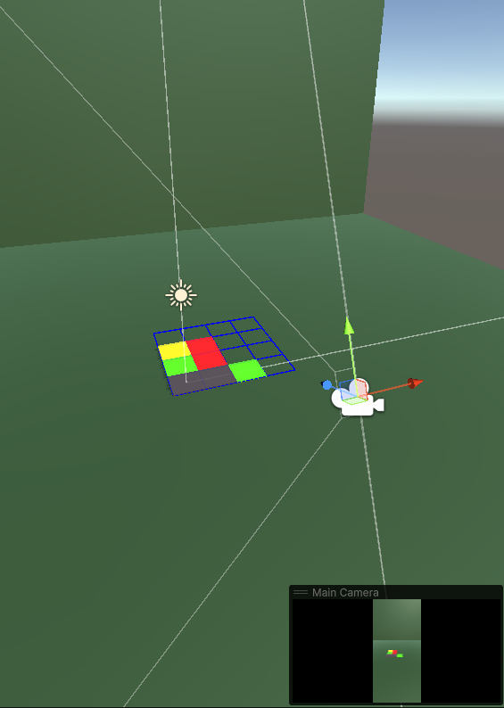

Grid Manager
Tracks ingredient positions, legal placement and collision with occupied cells.
UNITY • MOBILE PUZZLE
A small mobile puzzle project built around a grid-based placement system, swipe input and sequence validation.
Players move ingredients across a grid using swipe gestures, stacking them in the correct sequence to complete each sandwich.

Tracks ingredient positions, legal placement and collision with occupied cells.
Converts touch gestures into discrete directional movement.
Controls level configuration and progression.
Checks the final ingredient order before a sandwich is accepted as complete.
